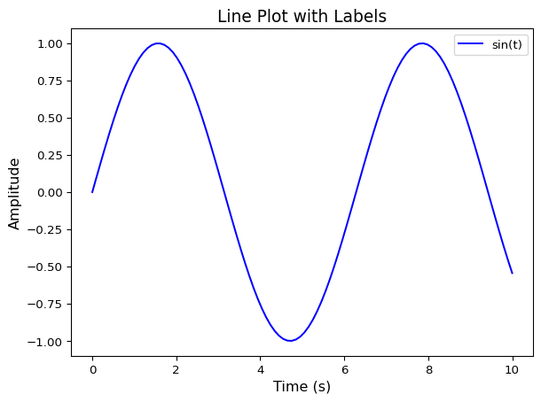
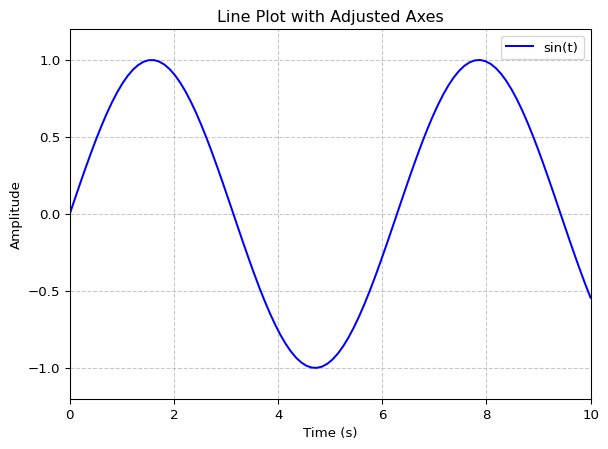

Ein gut gestaltetes Diagramm verbessert die Lesbarkeit und Verständlichkeit der dargestellten Daten. In diesem Kapitel werden wir verschiedene Möglichkeiten zur Anpassung und Gestaltung von Plots in Matplotlib erkunden.
3.1 1. Achsentitel und Diagrammtitel
Klare Achsen- und Diagrammtitel sind essenziell für die Verständlichkeit eines Plots.
import matplotlib.pyplot as pltimport numpy as npt = np.linspace(0, 10, 100)y = np.sin(t)plt.plot(t, y, label='sin(t)', color='b')plt.xlabel('Zeit (s)', fontsize=12)plt.ylabel('Amplitude', fontsize=12)plt.title('Liniendiagramm mit Beschriftung', fontsize=14)plt.legend()plt.show()

3.2 2. Anpassung der Achsen
Die Skalierung der Achsen sollte sinnvoll gewählt werden, um die Daten bestmöglich darzustellen.
plt.plot(t, y, label='sin(t)', color='b')plt.xlabel('Zeit (s)')plt.ylabel('Amplitude')plt.xlim(0, 10)plt.ylim(-1.2, 1.2)plt.grid(True, linestyle='--', alpha=0.7)plt.title('Liniendiagramm mit angepassten Achsen')plt.legend()plt.show()

3.3 3. Farben und Linienstile
Farben und Linienstile helfen dabei, wichtige Informationen im Plot hervorzuheben.
3.3.1 Wichtige Farben (Standardfarben in Matplotlib)
Farbe
Kürzel
Beschreibung
Blau
‘b’
blue
Grün
‘g’
green
Rot
‘r’
red
Cyan
‘c’
cyan
Magenta
‘m’
magenta
Gelb
‘y’
yellow
Schwarz
‘k’
black
Weiß
‘w’
white
3.3.2 Wichtige Linienstile
Linienstil
Kürzel
Beschreibung
Durchgezogen
‘-’
Standardlinie
Gestrichelt
‘–’
lange Striche
Gepunktet
‘:’
nur Punkte
Strich-Punkt
‘-.’
abwechselnd Strich-Punkt
plt.plot(t, np.sin(t), linestyle='-', color='r', label='sin(t)')plt.plot(t, np.cos(t), linestyle='--', color='g', label='cos(t)')plt.xlabel('Zeit (s)')plt.ylabel('Amplitude')plt.title('Anpassung von Farben und Linienstilen')plt.legend()plt.show()
3.4 4. Mehrere Plots mit Subplots
Manchmal ist es sinnvoll, mehrere Diagramme in einer Abbildung darzustellen.
Man kann Diagramme in verschiedenen Formaten speichern.
plt.plot(t, y, label='sin(t)', color='b')plt.xlabel('Zeit (s)')plt.ylabel('Amplitude')plt.title('Speicherung eines Plots')plt.legend()plt.savefig('mein_plot.png', dpi=300)plt.show()
3.6 Fazit
Durch geschickte Anpassungen lassen sich wissenschaftliche Plots deutlich verbessern. Im nächsten Kapitel werden wir uns mit erweiterten Techniken wie logarithmischen Skalen und Annotationen beschäftigen.